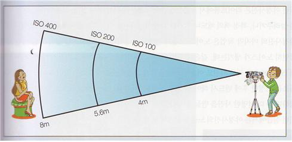

플래시를 사용할 경우 촬영거리를 더 늘리고 싶으면 어떻게 해야 할까? ISO를 증가시키면 된다. 여기에 적용되는 것이 역 제곱의 법칙이다. 이는 거리가 두 배가 되면 빛은 1/4로 줄어드는 것으로 폴-오프(Fall-Off)라고 한다.
가이드 넘버 산식의 감도계수에 ISO를 고려하면, ISO 100일 경우 1이므로, 200이면 √2, 400이면 √4가 된다.
GN = 거리(m) × 조리개 값 ÷ 감도계수
가이드 넘버가 44인 플래시로 조리개를 11로 했을 때, 최대 촬영거리는 4m인데 이를 두 배인 8m로 늘리고자 한다면, ISO 400으로 설정하면 된다.
즉, 거리(m) = GN ÷ 조리개 값 × 감도계수

[참고문헌]
프로페셔널 사진의 조건/라이트룸5, 백종수, 이지스퍼블리싱, 2013.11.14.
....
....
....
....
....
....